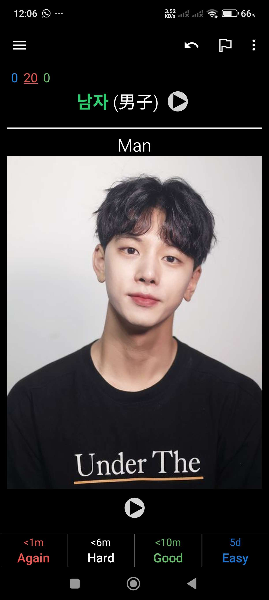
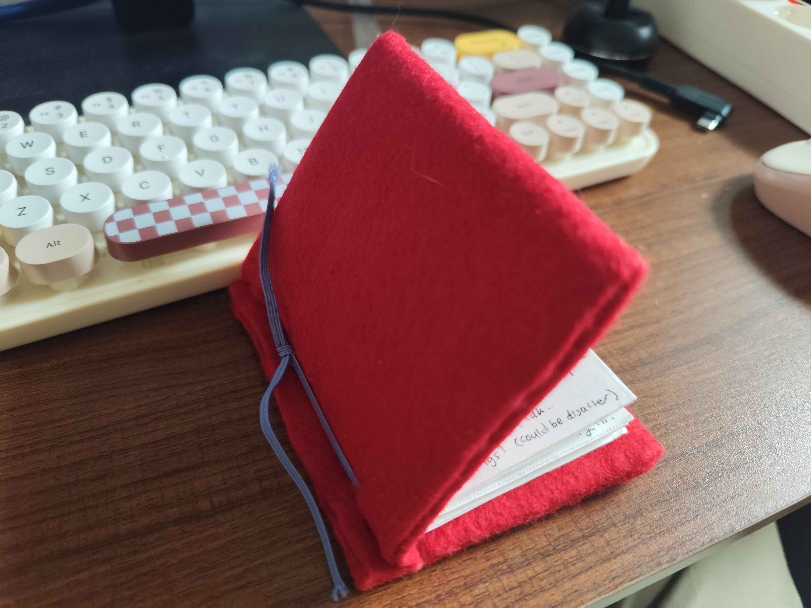
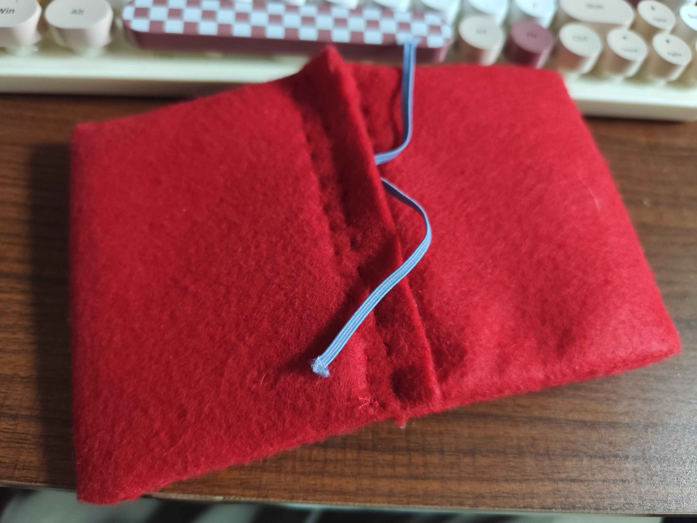
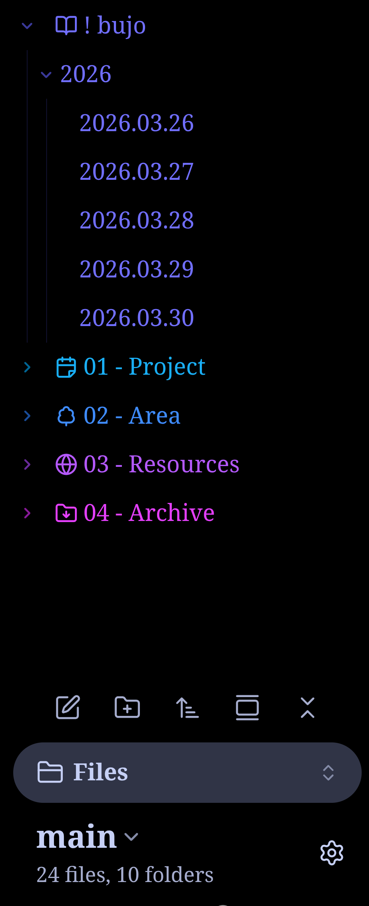
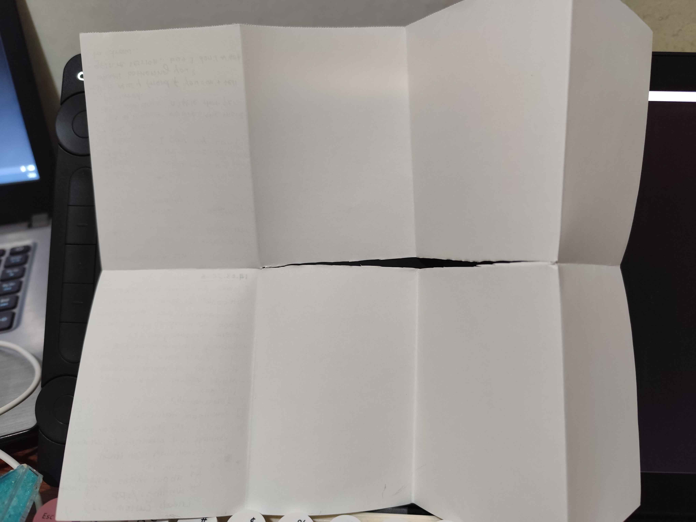
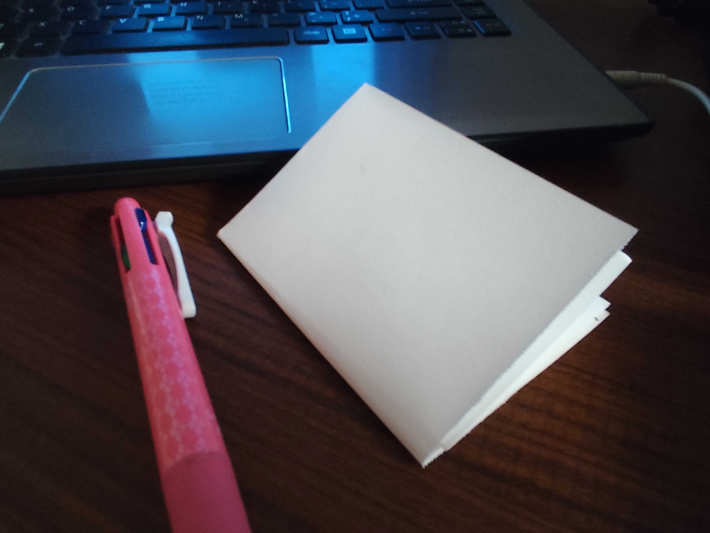

Index
09.04.2026: Vibing with Vtubers
07.04.2026: Flexing... Languages
One thing I realized after diving back to Vtuber (force-fed by algorithm) is, the member you like at first might be not the one you vibe with when watching the stream. Like, you may like their voice when singing, but something about their stream makes you uncomfortable. In the other side, there's members you may like just casually, but you can tune in their yapping or gaming session for hours.
So, as someone who had dipped my toes in this hell hole, it's not wise to declare someone your oshi within the first day discovering them. Right, streaming hours matter too. What's the point of forcing yourself to watch stream at 4am? I noticed the importance of timezone because everyone go to sleep when I wake up (When will Yuuya stop butthurting about living outside Western sphere?). Anyway, my point is there's plenty of fish out there if you don't feel like religiously following one person—a mistake I have done once of course. Vtubers are oversaturated and not everyone have time to spare.
The weirdest experience I have so far with learning Korean is, I accidentally downloaded beginner card with Kanji-like letters beside the word in hangeul, so my brain automatically guess the meaning based on the Kanji, not how the word is sounded in Korean itself.

(男子…だんし？)
Still related to language learning, I tried to read in Arabic again because of the claim I make on index page—I know the letters, but it's been ages. Surprisingly I understand how to put emphasis on elongated vowels now, passive skill from exposure to many vastly different sound systems. Korean has implicit rule to "merge" the consonants, so they can speak faster and easier, which reminds me of Arabic a lot. Idhgam bigunnah/bilagunnah, ikhfa, iqlab? Unlike Japanese with mostly "CV" (consonant-vocal) syllables.. it's clear, beginner only need to memorize how to say い and う uniquely.. well let's forget tone exist. Whenever I want to complain about how confusing written Korean is, I look back at the biggest nightmare: English. HOW DARE YOU, COMPLAINING WHEN ENGLISH DOESN'T EVEN HAVE CONSISTENT PRONUNCIATION LOGIC?
Only if Indonesian doesn't put 으 and 에 in same letter "e", it would be perfect.. Hold. I heard somewhere, good luck learning informal Indonesian, Indonesians abbreviate EVERYTHING lol. Guess no one safe.
April arrived. I'm still thinking about changing my layout or CSS with designs I found while websurfing, also archiving some pages (already?). Should I merge blogging section? (Update: I did) Yeah "I want to put everything in folders" is true for drawing, but can't be applied for writing. Such as, how to identify a topic for "Stuffs" and "Opinions"? Seems this "Opinion" area looks more like backstage where I put thoughts for the website here. Actually, it was intended for venting, but no way I can name it "Vents" right? lol
For past month though, I get used to write with better flow.. I don't know if people can notice the difference (ooooh I wish I get feedback). Right, personal update. I created alternate Discord account and move troublesome servers there. I don't know why but I feel better now. My head is clearer and I experience Joy of Missing Out. Why do I often feel upset whenever I check for updates?
Once I compared Discord with fast-paced, "shortform video" version of communication. It's not healthy. Yet I'm not sure if the efforts I put into polishing this website can be fruitful. At least I don't post updates on big-tech app..?
What I need to think about next is how to restructure Fandom sub-blog..
It might not be a surprise to anyone: English is my second language. I don't understand why I insist about writing in English—Grammar is hard, sometimes I accidentally write in my native language's sentence structure. "If I keep writing, I will improve eventually," That's what I thought. When I horribly crave feedbacks (and validation), I hand over my draft to AI... I swear to god, Writing is painful. It's like gritting teeth just to let out an information. Repeating same words over and over again stir up cringe feelings within me. Maybe, even for native speakers, they have to rely on thesaurus. No way they can come up with colorful phrase choices in instant.
("Are you using em dash because of AI?" God, no. I already know em dash since elementary school. I shall reclaim my favorite way to write tangents.)
Claude's judgement over minor mistakes still lingers in my mind when I stumbled upon non-fiction writing by Robert Kingett. Not the first time I discovered someone with passionately angry voice, nonetheless I'm impressed. Gentrification of English?. It reminds me of "Don't correct my grammar, I have no respect for this language" meme, but let's stop for a moment and think.
Had I read a fiction in my native language, would I have preferred overly formal tone or down-to-earth? Probably the latter, it shows that the characters live in the world's setting, as languages always adapt and be localized. Overly polished fiction will make me shiver? Dude I know you wouldn't talk like this. It eases my perfectionist tendency.
Do you see the pattern though? My internal critics are active both in drawing and writing. My endeavors won't let me have tranquility for a second.
Related to small web, I discovered that some people are not shy about the issues they care about. They voice it in their blog posts, not everyone tries to be buddy-buddy (and cultivate cozy vibe?). Sure, I want to be edgy if I want to, I had been imagining creating NSFW page here. Should I let myself be more free? Fear of offending someone is the worst jail you can inflict upon yourself.
It's been a while since I updated my blog. Although I was in day job vacation for two weeks, I still had several time-consuming freelance works. Opening VSCode and manually typing <p>s felt like a chore. Not to mention, an urge to remodel my entire site surfaced when I saw better design while websurfing. "Simplicity is accessibility" principle sounds like a cope, haha.
Continuing previous post: I sew a cover for one-paper book. It's made from 7 x 10 cm cardboards and felt fabric. The cover is thicker than the content inside, I find it super cute.


Next, I fall into another productivity rabbit hole: Obsidian. I already installed Obsidian since few months ago, I was looking for Notion alternative (it's bloated and laggy, dude), yet I only open the app for writing drabbles occasionally. After I learned about graph view from YouTube, I realized the potential that I have overlooked all this time.
The graph view allows user to visualize connections between their notes, as long one of it contains a link to the other. If you have numerous amount of notes, it will look like jumbled spider web, that's the fun part. You might notice which topic is linked the most—the thing matters in your life. This video by Odysseas explained the idea well.
However he mainly used Zettelkasten method, which I found complicated because everyone seems have different definitions for it. Pretty on-brand since Zettelkasten requires paraphrasing instead of direct quote when referencing the thing you're learning about. I combined it with PARA approach, following a system used by CyanVoxel.
I also add one more thing to my Obsidian setup. The most popular, often misunderstood, way of writing down tasks and thoughts: Bullet Journal.

It makes sense for me, because I already feel guilty because I can't pull out notebook and pen every. single. time something crossed my mind. Phone is easier, swipe and ta-da Obsidian is opened! (I used Pro Launcher btw, totally not motivated by Sunk Cost Fallacy) My phone is always near me even when I wake up.
How this works: Zettelkasten has three stages of processing information: fleeting, literature, and permanent. Fleeting goes to daily notes a.k.a Bullet Journal, specific lines are linked to blank "topic" note where I can overview everything in chronological order. Literature notes are stored in Resource folder, I summarize my undestanding about a topic, with its source or reference. Lastly, permanent notes.. Well, I have this blog. I accidentally created a place for the output.
No, don't worry. Paper and pen still have a place in my life, namely for drafts (including this one). I'm forced to rewrite and polish the typing when I want to post it online. It's matter of intention. When you need to store something quick, easy to format, use digital. When you want to sit down, clear your mind, and face the demon of Blank Page, go offline and grab the notebook.
For past few years, I have been subjected by social media detox side of YouTube—because Instagram art account grind makes me lowkey mad, lol. Several items have been recommended to me, the claim is "you can cure your doomscrolling habit". Err.. I'm not sure. It's nice creative hobby to pick up though.
Zines, bullet journal, traveler notebook (I haven't bought my dream one yet).. You name it. When I was packing for a short trip yesterday, I suddenly remember one technique I learned from a zine video, no other than "one-paper book". The idea is, you can fold a paper into 8 (once horizontally, twice vertically), and you cut the middle part.


Neat, isn't it? Far less commitment than impulsive buying new stationary.. My A4 sketchbook is laying around unused, so I repurpose it. Maybe I can put several papers into some traveler notebook cover? Since the rubberband bind notes together. You can use it for writing, drawing, or brainstorming bigger project. At first, I wanted to do urban sketching once I arrived at the destination, but I ended up journalling and jotting down ideas instead.
The downside of personal web movement is, I don't think I will meet people in my region if I don't participate in social media at all. Such as artists, who usually post on Twitter, or even new friends to chat through Discord, yada yada. Even when I was testing Mastodon/Fediverse, or small site like cohost, ..most of the users come from Western countries. The fact that I am in this side of internet, thanks to I'm primarily using English to browse the contents. Once I thought, "I'm not weird, it's just that I'm raised in foreign internet bubble,"
That being said, I don't think I can 100% adopting life values promoted by these Western users, because my belief is still shaped by real life that affected me. I wonder what is considered "hate", is it just differences in opinion and not following the loud crowd? Well I wish I can just relax here. There's no point of having personal space if I still adjust myself according to invisible audience.
Long weekend, 2 weeks off, approaches. I don't have any dangling, unresolved feelings unlike the last time, yet.. It might be because I'm drained emotionally? I don't think my holiday can be count as "exciting", the difference is only I don't transit to work at 7.30 am everyday. The doomscrolling? Not changing. Weary. The time where I usually hype about Discord servers, they become noises—texts as manifestation of collective's mind, all with their own self-centered priorities. In the end of the day, every social group heads in same direction.